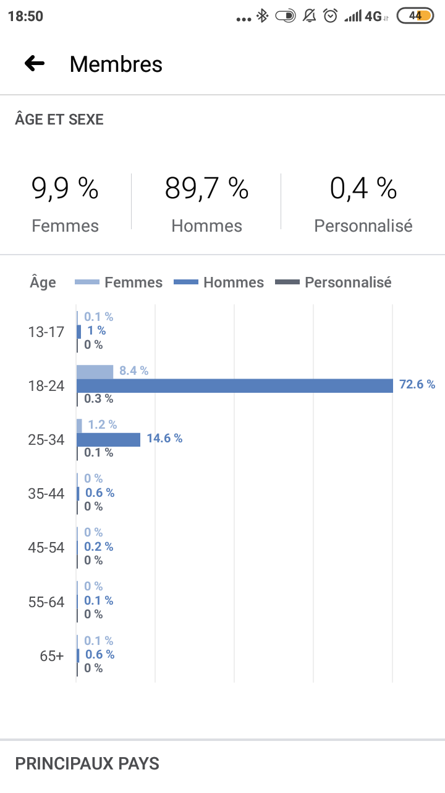

Entretien avec Quentin Bihel, fondateur et modérateur de groupes de memes sur Facebook
L’interview de Quentin Bihel, fondayeur et modétateur du groupe Facebook Neurchi de Kemar, a été très enrichissante pour notre exploration. Vous pouvez la retrouver en intégralité ci-dessous. Nous avons sélectionné pour vous les points clés de cette interview !
Dans cette interview, Quentin Bihel évoque la modération des groupes de Neurchi comme « l’essence de Neurchi ». La règle principale est l'interdiction des tags sauvages afin de garder des espaces de commentaires sains, qui ont parfois autant de valeur ajoutée que le post lui-même. C’est la grande différence avec les pages publiques d’humour où les internautes tagguent leurs amis sur les publications humoristiques. Aussi, nous pouvons en déduire que chaque membre du groupe doit participer activement à l’enrichissement des discussions autour du thème central. Les "private jokes" qui ne concerneraient que certains membres du groupe ne sont pas tolérées au sein des groupes de Neurchi, toute la communauté doit être en mesure de comprendre la plaisanterie. Cela permet de renforcer l’esprit de communauté.
Les règles à respecter afin d’entrer dans le groupe sont très claires. Elles sont définies au moment de la demande d’adhésion. L’internaute doit remplir un questionnaire dans lequel ces règles lui sont rappelées. Le but étant de faire régner le respect et la bienveillance au sein du groupe. Cette bienveillance est toutefois variable selon les groupes.
Quentin Bihel explique que l’activité d’un groupe Facebook crée ses propres codes et références, et que les comprendre donne un sentiment spécial, un sentiment d’appartenance à une communauté. Cela vient en partie confirmer notre hypothèse. Il y a une réelle culture interne au groupe, qui soude les membres et renforce leur attachement au groupe.
Selon lui, Neurchi de Kemar est « un ensemble de gens qui partagent des goûts et/ou des intérêts, qui créent leurs propres codes et références à partir de ces goûts et intérêts communs, et les font vivre». Grâce aux statistiques que Quentin Bihel nous a fait parvenir, nous avons pu confirmer l’hypothèse que les groupes de memes sont des groupes plutôt homogènes sur le plan socio-démographique : il y a une très large majorité d'hommes de 18 à 25 ans, étudiants du supérieur pour la plupart.
Alors tout est parti d'un pote avec qui on parlait de Mister V sur Messenger, et il avait établi un schéma-type de tous les sketchs de Mister V, on se disait que c'était pas très drôle (même si chacun ses goûts bien sûr). Mais son schéma type était marrant et je l'ai posté sur Neurchi de Copy Pasta. Dans les commentaires du post, la conversation a dérivé sur Kemar que beaucoup trouvaient unanimement beaucoup plus drôle. Quelqu'un a suggéré de créer Neurchi de Kemar, alors j'ai créé le groupe et ajouté le pote en question ainsi que les autres gens qui avaient commenté en administrateurs du groupe. Donc c'est plus parti d'une blague qu'autre chose, il n'y avait pas une volonté de monter un groupe avec beaucoup de gens, on le faisait juste pour s'amuser avec les quelques fans de Kemar qui avaient pu lire ce post originel.
J'ai créé d'autres groupes, comme "Neurchi de memes mal utilisés", qui n'a pas du tout eu le même succès. Je crois que je l'ai créé avant NdK mais il n'y a toujours pas 500 membres. Je suis aussi admin de "Neurchi de Fausses informations", qui est le groupe lié à la page du site parodique Francheinfo dont je fais partie des rédacteurs depuis que le site s'est créé en mai 2019.
Et ce n'est pas un Neurchi mais j'ai aussi créé "Certes. Mais que faire de cette information ?", qui cartonne bien aussi. Là j'avais juste envie de faire un tag group pour reprendre une phrase marrante que quelqu'un avait mis en réponse sous un commentaire. L'idée a bien plu, beaucoup de gens taggent le groupe, et on a donc gagné pas mal de monde. Donc on a développé la modération et choisi une ligne éditoriale pour les posts à l'intérieur du groupe. Mais à part Memes mal utilisés, tous ces groupes sont postérieurs à NdK.
C'est intéressant que tu parles de "codes" propres au groupe, pour développer un peu je pense qu'il faut replacer le contexte des groupes Neurchi. Tout le monde peut créer un groupe et mettre Neurchi dans le nom, ça n'est pas une marque en soi ni une limitation technique, mais en le faisant je pense qu'on se porte garant d'au moins deux règles, à savoir privilégier les memes au sein du groupe plutôt que d'autres types de posts (même s'il y a bien sûr plein d'autres Neurchi dédiés à d'autres formats ; en tout cas, se centrer sur un format me paraît être un bon principe), et la modération des "tags sauvages". Ça c'est un peu l'essence de Neurchi, ça permet de garder des commentaires agréables à lire pour tout le monde, qui ont parfois autant de valeur ajoutée que le post lui-même. Et ça nous différencie des pages publiques d'humour où tout le monde tagge ses potes juste pour qu'ils voient la publication sans autre valeur ajoutée.
Pour faire respecter ça, ça s'est fait dès le début quand le groupe a commencé à gagner en notoriété, en précisant des règles du groupe, en instaurant un filtre et en supprimant ce qui ne s'y conformait pas. Au début on avait peu de memes, il y avait des gens qui portaient simplement des screens de vidéos ou même des liens Youtube de sketchs de Kemar sans autre apport. En les supprimant et en privilégiant les memes, je pense que ça incite les membres à faire pareil, que ça les encourage à publier des memes. D'autres règles ont pu s'ajouter au fur et à mesure, par exemple on a dû bannir les posts concernant des boas parce que beaucoup de membres postaient simplement des articles qui parlent de boa, sans valeur humoristique spéciale. On a aussi ajouté l'interdiction d'ajouter le profil perso de Kemar au groupe, ça arrivait régulièrement et on s'est dits que s'il voulait rejoindre le groupe il le ferait de lui-même.
Il y a une règle plutôt implicite aussi, c'est le respect, on supprime et on sanctionne les posts ou commentaire insultants, discriminants ou oppressifs. Mais ça va on n'a pas trop ce genre de soucis, j'ai l'impression qu'on a une communauté plutôt "wholesome". Je pense que ça vient du fait que le contenu de Kemar est quand même très apolitique, ça n'a pas lieu de créer des frictions ou de grands débats comme on peut le voir ailleurs.
Pour choisir ce qui passe le filtre, je crois que je suis plutôt bon public. Tant que ça respecte les règles, j'approuve tout ce qui peut me faire rire, et même ce qui me fait moins rire mais dont je capte la référence à Kemar. Je préfère encourager les gens à faire des choses, même si la technique est parfois un peu moche (des memes faits sur Snap, ou mal rognés), mais qui saisissent bien l'esprit du groupe et sont originaux, plutôt que de tomber dans une forme d'élitisme.
On a une conversation de groupe avec les admins, et une autre avec une dizaine de membres les plus actifs du groupe. En cas de doute sur une référence que je n'aurais pas comprise, ou si une blague a déjà été faite, on screen le post et on demande leur avis aux autres.
Un dernier point, j'essaye de ne pas spammer le groupe et d'approuver au compte-gouttes, plutôt que d'approuver en direct dès qu'un post est proposé. Ça permet de gagner du temps, et aussi je l'espère de ne pas saouler les gens. On priorise les publications par ordre chronologique, même s'il peut y avoir des exceptions, s'il y a une actu "chaude" ou une nouvelle vidéo de Kemar par exemple.
Même si on a dû augmenter la fréquence avec l'expansion du groupe, il y a toujours des memes qui atteignent les 1000 likes, parfois les 2000, je pense que c'est signe que les gens continuent d'apprécier le groupe.
Pour l'adhésion il y a un système de questionnaire d'entrée, on peut rédiger trois questions de notre choix et ensuite on peut filtrer les demandes d'adhésion en fonction de la réponse ou non à ce questionnaire. Dans les questions on rappelle tout simplement les règles du groupe, pour être sûrs que les nouveaux membres les aient lues. Mais Facebook permet également de joindre directement les règles à ce questionnaire d'entrée, et la personne qui demande à entrer peut cocher une case "J'accepte". Donc de là, on filtre simplement les gens qui ont répondu aux questions, ou les gens qui ont coché la case.
Dans ceux qui restent (qui n'ont ni répondu ni accepté le règlement), Facebook nous permet de voir quelques infos, comme le nombre de groupes total dans lequel il est présent, le nombre de groupes qu'on a en commun avec lui, etc. Quand quelqu'un n'a répondu à rien, s'il est quand même dans quelques groupes Neurchi, je l'accepte quand même en général. Je pars du principe qu'il connaît les règles de base.
En dernier recours, je réactualise les questions toutes les 24h, simplement en faisant une petite modification dans une question (genre ajouter un espace et enregistrer). Ça envoie une notification à toutes les personnes qui n'ont pas encore répondu, je crois que ça dit quelque chose du genre "Répondez à quelques questions pour rejoindre Neurchi de Kemar". Ça peut arriver que des gens n'aient répondu à rien parce qu'un de leur amis a utilisé la fonction "Inviter", sans forcément les prévenir. Donc on est plutôt indulgents ! Si après tout ça il n'y a toujours pas de réponse, on supprime la demande. Mais on ne bloque pas la personne, elle pourra toujours demander à rejoindre plus tard.
Oui, dans un sens, je pense que participer activement à un groupe et être valorisé par les likes ou les réactions des autres membres, ça peut gonfler l'ego, et peut-être donner un sentiment de supériorité. Je dis pas ça dans un sens forcément péjoratif d'ailleurs, c'est une bonne chose de gagner en confiance parfois. Et de toute façon c'est exactement les mécanismes sur lesquels Facebook mise avec ce système de likes et de notifications, on recherche tous ce petit boost de dopamine. Donc la gestion d'un groupe Facebook est forcément dépendante de cette mécanique, mais je n'y vois pas que des inconvénients. J'ai déjà reçu un message d'un membre qui m'a confié être en dépression, mais que le groupe lui faisait du bien. Ce genre de message, ça fait vraiment plaisir. Même si la naissance du groupe s'est faite un peu sans raison et sans prétention, si le groupe peut faire sourire quelqu'un une fois dans sa journée, ça m'encourage beaucoup à continuer de m'y impliquer.
Sans entrer dans des cas aussi particuliers, je pense que l'activité d'un groupe Facebook, que ce soit celui-là ou un autre, crée effectivement ses propres codes et références, et que les comprendre donne un sentiment spécial, pas forcément de supériorité mais au moins d'appartenance à une communauté, je dirais. C'est un peu comme les gens qui pratiquent le même sport, ou viennent du même village. Avoir un socle culturel commun ça rapproche forcément, et ça soude les gens. Sur Neurchi de Kemar je pense qu'il y a trois facteurs qui justifient ce sentiment : l'appartenance à la communauté Neurchi en général, avec de mêmes membres et de mêmes manières de comprendre l'humour sur différents groupes ; le fait d'être fan de Kemar en particulier ; et enfin le fait de comprendre spécifiquement l'humour interne à ce groupe-là, d'avoir suivi des "trends" de memes, de faire référence au tournoi des personnages d'Arnaud Latran ou aux watermarks de Théo Cce par exemple.
Ce dernier point me semble le plus important parce que c'est le plus "exclusif", les autres groupes Neurchi n'ont pas ces références, ni les autres fans de Kemar non membres du groupe. On développe une "culture" interne au groupe et je pense que c'est très puissant dans l'implication émotionnelle des membres et leur attachement au groupe.
Oui voilà ! Je sais pas si ça colle à la définition académique du mot communauté, mais pour moi c'est un ensemble de gens qui partagent des goûts et/ou des intérêts, qui créent leurs propres codes et références à partir de ces goûts et intérêts communs, et les font vivre.
Ouais Neurchi c'est assez jeune et très masculin. Mais c'est cool parce que certains groupes en ont pris conscience et ont mis en place des démarches pour favoriser la parité, comme le groupe Neurchi dédié aux sciences sociales qui s'est renommé "Colloque de mémologie réflexive" et qu'il dédie le mardi uniquement aux publications postées par des femmes, et le groupe "Neurchi de memes de meufs", mixte dans ses adhésions mais réservé aux femmes pour les publications (qu'elles concernent la féminité ou non).

Oui, déjà lorsqu'il y a des crossovers entre deux thèmes ou deux univers ça arrive souvent que l'auteur ou l'autrice poste son meme sur d'autres groupes, comme NdOSS, NdPalmashow, NdKaamelott, NdAntimemes ou Teurcréa. Et au-delà de Facebook j'ai aussi créé un compte Twitter pour le groupe où je poste les memes qui ont eu le plus de succès. Ça permet de donner une visibilité publique. Et certaines personnes qui ne sont que sur Twitter créent leur même dessus, puis mentionnent le compte pour qu'on les retweete. Dans la même démarche, a aussi comme projet une page Facebook publique et un compte Instagram, pour permettre de montrer les meilleures contributions à des personnes qui ne sont pas vraiment à l'aise avec les groupes Facebook, ou qui ne sont tout simplement pas sur la plateforme.